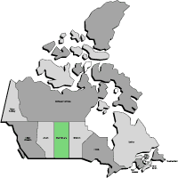
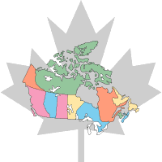

Sask. Geography
Census of Agriculture
Sask. Agri-food
The Emblems
Conversion Tables
Conversion Calcs.
|
Saskatchewan Geography
 Where is Saskatchewan? How big is it? How many people live there? What's the climate like? Find the answer to these and other questions on this page.
Census of Agriculture  The first census in Canada was conducted in 1666. Nowadays, an agriculture census is conducted simultaneously with the population census. It is taken every five years. The latest Agriculture Census was taken in 1996. The summary data are presented here. |
|
Saskatchewan Agri-Food Industry |